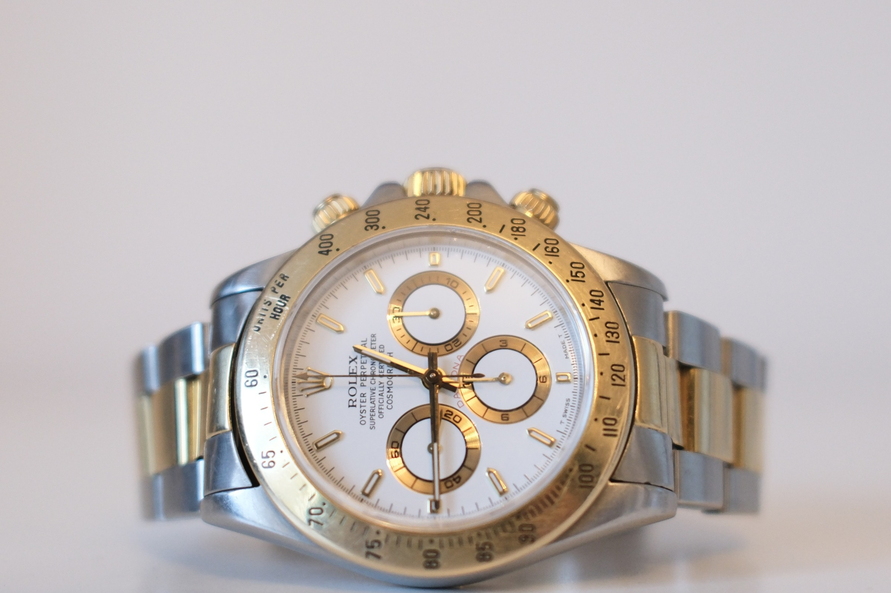
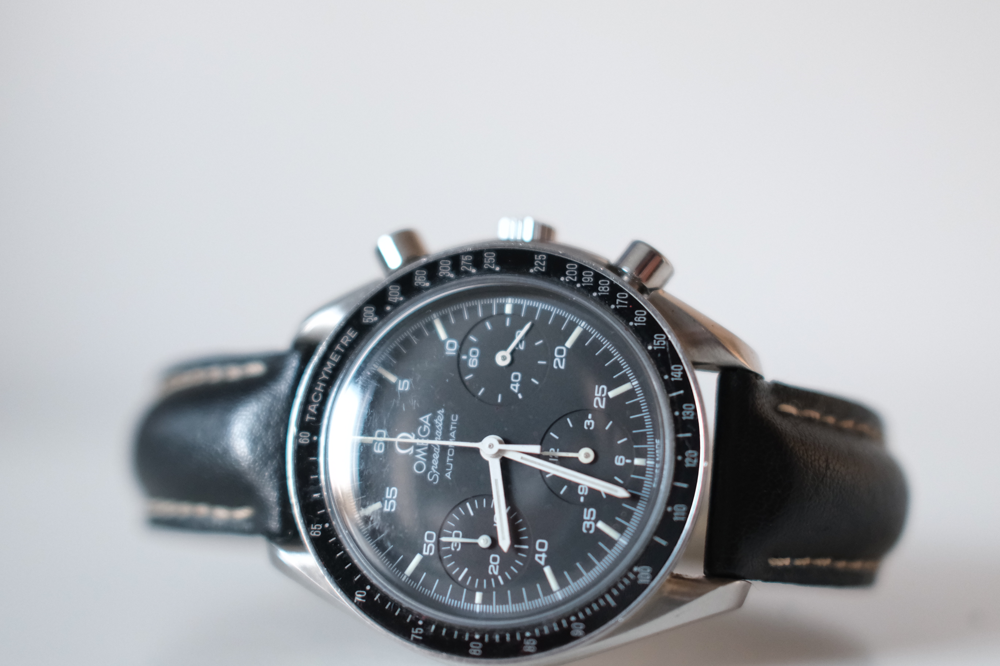
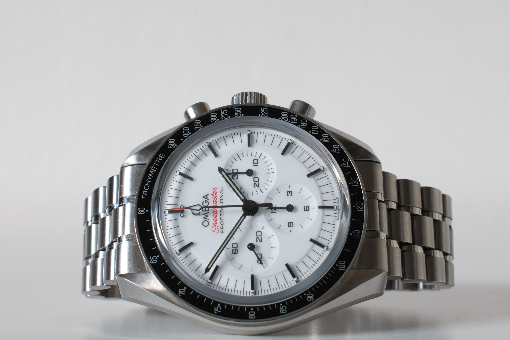

Skriv til os
Interesseret i dette ur?
Spørg om hvad som helst, eller aftal en besigtigelse. Du hører personligt svar, som regel samme dag.
- Emailanton@allintime.dk
- Telefon+45 22 72 00 73
- Instagram@allintime.dk
Mere fra All in Time
Du synes måske også om

Daytona
DKK 99.995
Rolex Daytona ref. 16523 i tofarvet udførelse med hvid skive, tre kronograftællere og tachymeterskala på lynetten. Uret er monteret på en tofarvet lænke. T-serie fra 1996-1997. Standen er vurderet til 70 %.

Speedmaster Reduced
DKK 22.495
Omega Speedmaster Reduced fra 1999 med sort skive, tre kronograftællere og sort tachymeterlynette. Uret er monteret på en sort læderrem med lyse syninger og har en stålkasse. Standen er vurderet til 80 %.

Explorer II
DKK 45.995
Rolex Explorer II ref. 16570 med sort skive, lysende timemarkeringer og rød GMT-viser. Den faste stållunette har 24-timersskala, og uret er monteret på stållænke. Datoen vises ved klokken 3 under forstørrelsesglasset. Standen er vurderet til 85 %.

Speedmaster Moonwatch
DKK 49.500
En ikonisk Omega Speedmaster Moonwatch Professional med elegant hvidlakeret skive, sorte kontrastdetaljer og klassisk stålkonstruktion. Modellen viderefører det legendariske Moonwatch-design, der har været en del af Omegas historie inden for rumfart, og kombinerer vintage-inspirerede detaljer med det moderne Co-Axial Master Chronometer-kaliber 3861. Et tidløst og karakterfuldt ur, der forener historisk arv, teknisk præcision og et raffineret udtryk.